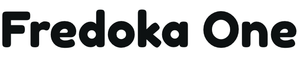

Our non-profit redesign is for Books for Keeps which gives books to
children who have limited access
to reading materials because of
factors like geography or income. Books for Keeps is based
in
Athens, GA and after looking at the current Books for Keeps website,
it was clear to our group
that we could make a lot of improvements.
So to start off our research, I got in touch with the Books
for Keeps
executive director. And it turns out that they’ve had
“website redesign” on their to-do
list for seven years which is a
happy coincidence for us.
After talking with the BFK Executive
Director, she made it clear that
her biggest frustrations were that the current website isn’t
mobile
friendly and it’s not necessarily easy to navigate because of the
amount of pages and
content on those pages. So our focus was on
implementing a responsive web design and reorganizing the
website’s
most crucial information.
UX Research, UX Designer, UI Designer
Adobe XD, Miro, G Suite, Trello
December 2020
Books for Keeps is a non-profit organization that focuses
on investment in early childhood
education. They work
to end the “Summer Slide,” the learning loss suffered
by many children
when they are away from school.
This disadvantage primarily affects children from low
income
families due to lack of access to books.
We aim to redesign the Books for Keeps website in a
way that increases donations/volunteers and
publicity.
Overall, we would like to make the website more
intuitive, responsive and visually
pleasing.
Parents of young children or people involved with
young children.
1. Do you donate books? If they do, share where they
do and why they do donate.
2. What do
you do with books once you or your child have
read them?
3. How do a majority of users
prefer to get involved?
4. Describe a time when you have either donated money
or given
items away.
Research will be collected through user interviews,
and heuristic evaluation.
Leslie’s insight was crucial to our design decision making, and her
feedback along with the
feedback from our general interviews
really grounded us from the beginning to end of this
project. Leslie
told us that Books for Keeps primarily targets community
stakeholders because
90% of the books given to students are
bought with the money donated by community sponsors.
Some
other key findings that were unanimous in all interviews was the
importance of telling a
clear and captivating story, which not only
makes Books for Keeps more credible as an
organization, but it
also makes users more comfortable with the idea of donating.
Keeping all
of our research in mind, our overall goals for this
redesign were to increase donations, make the
website mobile
friendly and refresh the design so that it’s exciting, playful and
matches the
tone of the organization.
“If websites were easy to navigate and
clear on how to donate as well as where
my money is
going, I would be more
like to donate.”
“I like to know where my money is going.”
“I like to give monetarily because I don’t
have a lot of free time to volunteer.”
Our research inspired this user persona, Jane Cooper. She lives in Athens and is a stay at home
mom of two
young children. She enjoys reading, tends to be a book hoarder, and wants to use
some of her free time to
give back to the Athens community. She is frustrated because she can’t
figure out where to donate or
volunteer since she often doesn’t know what the non-profit doe
specifically with the money.
Updated donation page with details about how their financial contribution. Based off of our
stakeholder
interview - The main objective of their website is to share their mission, first and
foremost so we made
sure to add that prominently on our homepage. We’ve combined what
would be most important for a user
along with the key insights from our stakeholder interview,
the end goal is obtain donations, volunteers
and sponsors so we made our “Donation” button in
a pop color and visible from every page. We’ve made it
as easy as possible for a user to learn
about the organization and get involved if they are inspired to
do so.
BooksforKeeps.org was created to communicate their mission in order to foster relationships
and
encourage volunteerism. We have observed that the website isn’t mobile friendly and
suffers from a
lack of solid organization. How might we improve the information structure
and layout to increase
involved from community stakeholders.
Clear mission statement and immediate call to action buttons like “About us” and “Donate” so that
people
who visit may learn about the non-profit and be encouraged to view the donation options.
Updated donation page with details about how their financial contribution will directly help children in
need.
Based on research and user insight, we wanted to make clear where the money goes when people
donate.
We also included a “donation frequency” portion to set up auto weekly or monthly or one time payments.
Restructured navigation bar to prioritize the needs of both the non-profit and those who visit the
website.
The navigation bar contains information about the non-profit, how to get involved, resources an
event
page that will encourage people to create fundraising opportunities, and lastly a clear donate
button.
Primary Header
Secondary Header
Color Palette
The primary typeface we chose titled “Fredoka One” is a very large and striking font that we felt
depicted
a bit of playfulness more closely related to children’s books. After some research into
color psychology,
we decided to use a bright orange color for our buttons. Orange is found to be
inviting, warm and
enthusiastic. Orange is an attention grabbing color that may prompt users to click
around the website
more than they would if it were a less motivating color.
Donate Page Before
Donate Page After Iteration
Based off of usability testing, one of the changes we chose to make was on the donate page. To keep
with
our style guide, we chose to be consistent with our use of the orange code orange color now
indicates
only clickable items. We also adjusted the design of the primary header to be more in line
with our
“About Us” and “Get Involved” pages.
As we saw earlier, we had a different style for the donate page header, based
off of our feedback, we
decided to unify the three pages by changing all headers to
look the same as you can see in the “About
Us” “Get Involved” and “Donate” section..
Here is a side by side of the first and second iteration of the homepage layout.
Under the “How to get
involved” section of the homepage, we originally had
each item stacked on top of each other, and we chose
instead to go with an image
carousel to save room and reduce the amount of scrolling the user would have
to do.
Our overall goals for this redesign was to increase donations by presenting Books
for Keep’s message
through clear but playful UI that matches the tone of the
organization. In the future, we hope to create
an “Event Page” that allows volunteers to
organize fundraisers to increase donations to the non profit
as well as raise awareness
to the community about what Books for Keeps does. We were also presented with
the
opportunity to work with Books for Keeps in the future with a website redesign. We
will present
this case study to the Executive Director as a team and work to solve the
needs of the non profit and
their users.